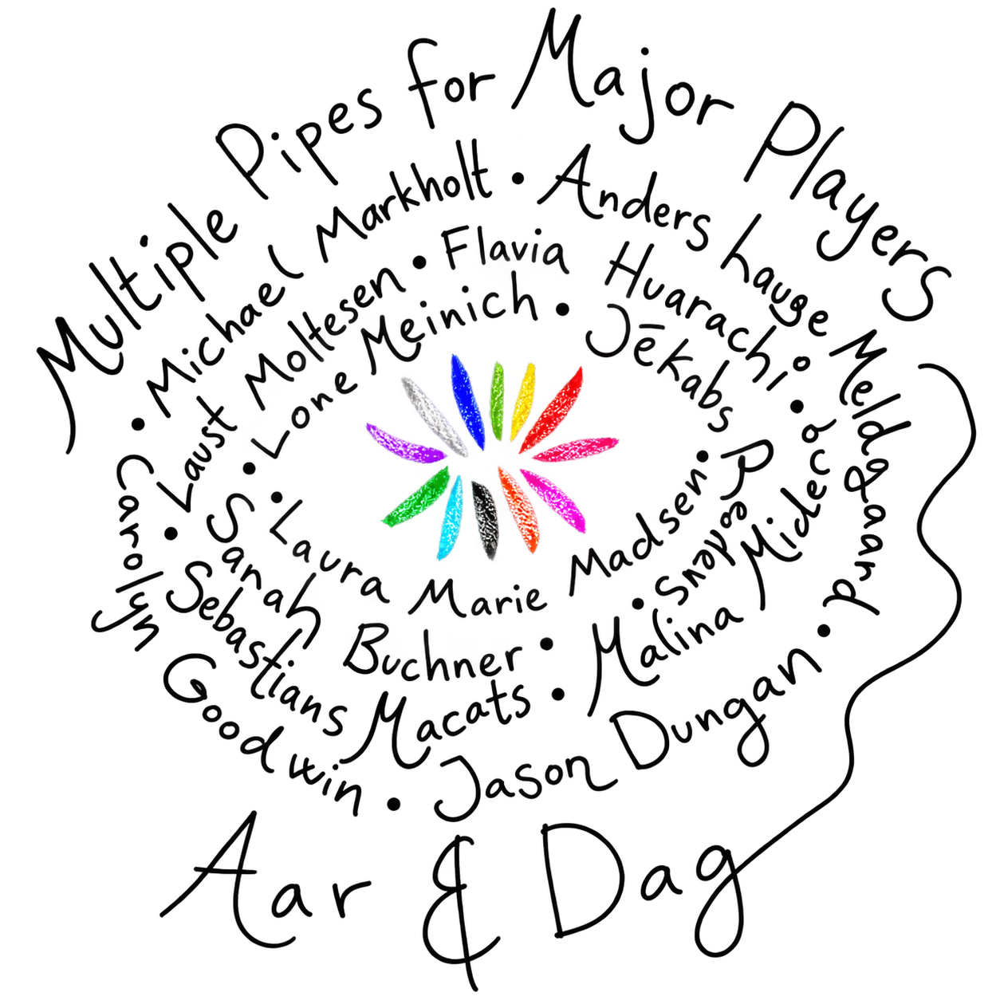
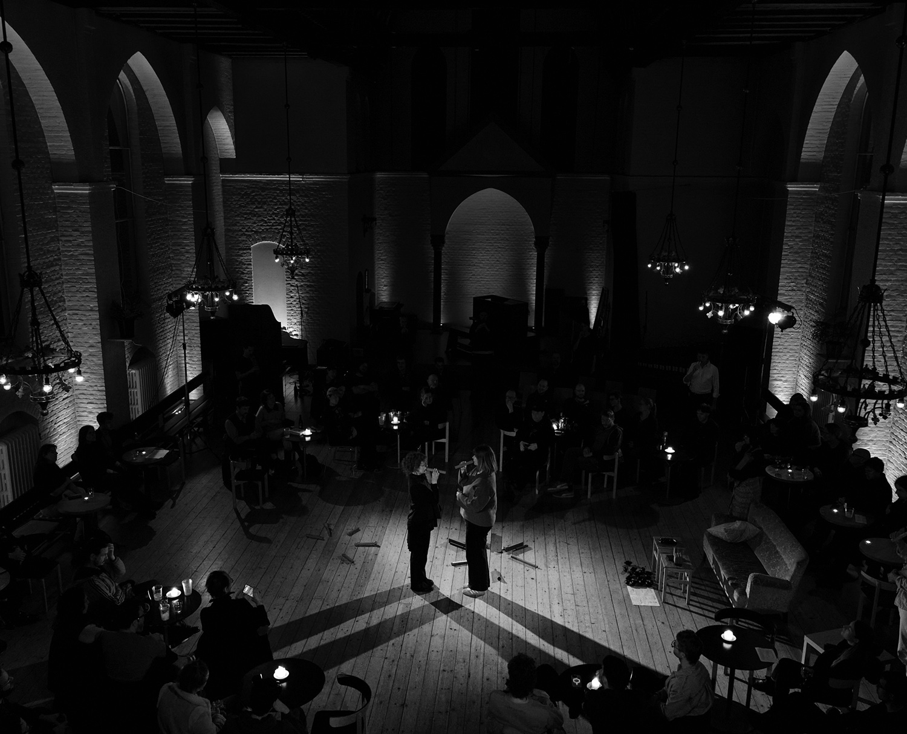

Multiple Pipes for Major Players(2025)
Multiple Pipes for Major Players is a work by the composers Anders Lauge Meldgaard and Michael Mørkholt. The piece premiered as the opening concert of Organ Sound Art Festival 2025 at KoncertKirken in Copenhagen, performed by a 12-piece ensemble consisting of musicians from Copenhagen’s experimental music scene.
The work reimagines the pipe organ as a collective instrument. Rather than having a single organist perform at a central keyboard, the pipes are distributed among the musicians, who together form a living human organ. The instrumentation combines mouth-blown wooden pipes with specially developed 3D-printed organ pipes, allowing the ensemble to move freely and create a dynamic interplay between sound, body, and space.
The composition unfolds through open structures and playful, game-like principles. Rather than following a fixed musical score, the musicians navigate a shared sonic landscape, responding to one another in real time. Through listening, improvisation, and collective decision-making, the music emerges as an evolving organism — at once playful, exploratory, and deeply attentive. As music journal Seismograf observes, the performance is "equally choreography, concert, and musical gamification", opening up space for unpredictability and chance within a collectively negotiated musical system.

Rooted in experimental musical traditions, Multiple Pipes for Major Players challenges conventional ideas of instrumentation, authorship, and musical performance. It proposes an alternative understanding of the organ: not as a monumental instrument operated by one individual, but as a social and performative system brought to life through collective action. The review in Seismograf describes the work as opening up "new perspectives on the organ", both disenchanted through the dismantling of its traditional form and re-enchanted through a childlike imagination and sense of discovery. Through its combination of movement, sound, play, and collective interaction, Multiple Pipes for Major Players creates a performative situation characterised by curiosity, discovery, and an ever-changing relationship between the musicians, their instruments, and the surrounding space. PERFORMERS · LONE MEINICH · JASON DUNGAN · CAROLYN GOODWIN · ANDERS LAUGE MELDGAARD · MICHAEL MØRKHOLT · MALINA MIDERA · SEBASTIANS MACATS · LAURA MADSEN · JEKABS REDERS · SARAH BUCHNER · LAUST MOLTESEN · FLAVIA HUARACHI · Coverage in Seismograf By Rasmus Steffensen